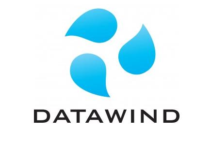

India
X is a wireless web access products and services developer founded in Montreal, Canada. The company is now widely known for its development of the Y, developed in collaboration with India's Ministry for Human Resource Development (MHRD). In addition to its Y product range, X has been manufacturing since 2004, a series of mobile internet devices branded as the 'PocketSurfer' smartphones and 'UbiSurfer' netbooks. The company still maintains its research and development operations in Montreal but it has offices in London, Delhi and Amritsar. Identify X and Y.
